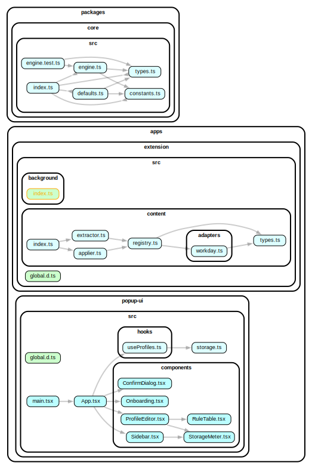

Still putting the finishing touches.
A browser extension for managing and autofilling job application forms.
This is a learning experiment and for my personal use.
Not intended for public use. Use at your own risk.
The code is made available for critique, as-is, without any warranties.
Feature requests are highly likely to be ignored.
browser.storage.apps/extension: The core browser extension (Background & Content scripts).apps/popup-ui: React-based management dashboard.packages/core: Shared TypeScript logic and matching engine.pnpm install
pnpm build:core
pnpm dev:popup
The dashboard includes a mock storage layer for debugging in a standard browser tab.
pnpm build
The final extension will be available in apps/extension/dist.
Uses Playwright, tests on Firefox and Chromium.
pnpm test:e2e
# To see test results in a browser:
pnpm test:e2e:report
pnpm launch
This starts a test server and runs the extension using web-ext.
